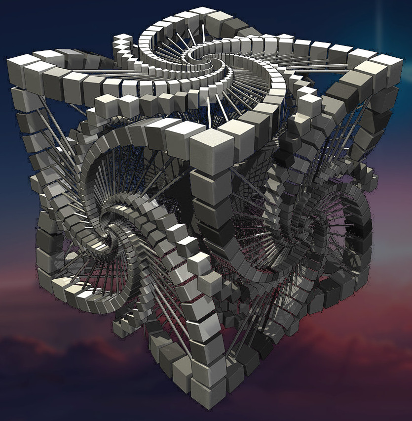
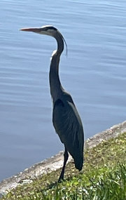
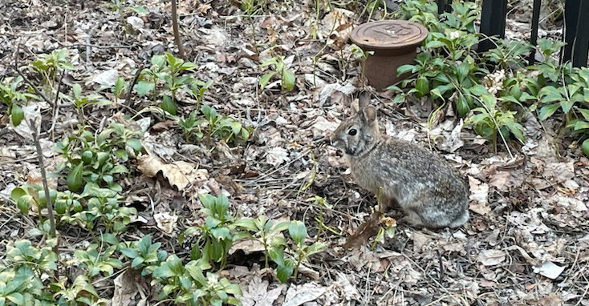
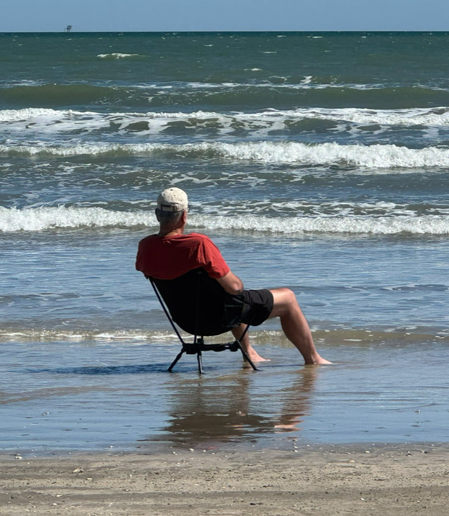
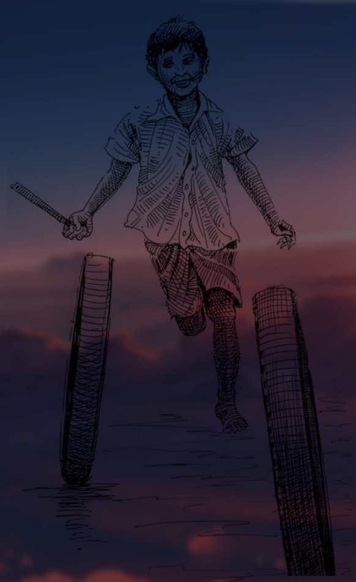
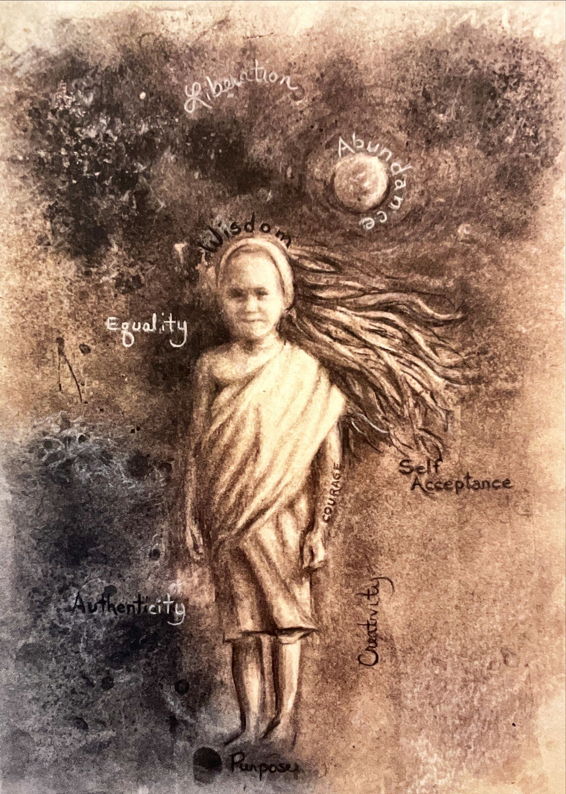
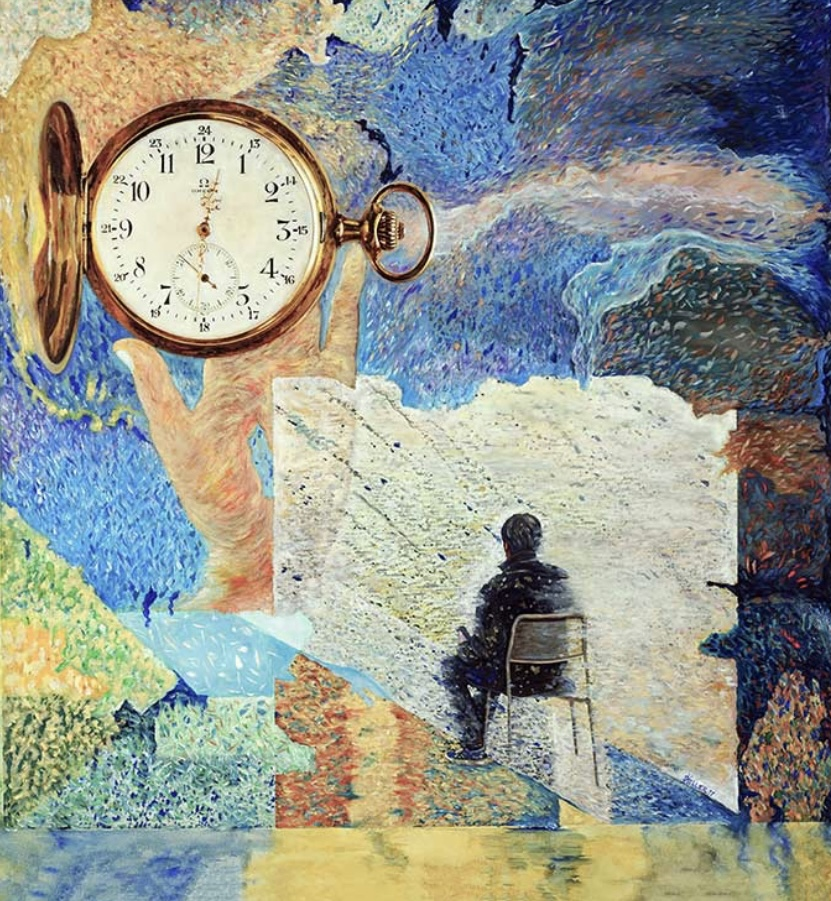

Observations of Thought
Listen, Read, Walk
~***~

An enchanting journey
There is something revealing about viewing large things in three parts, each part equal to the other, and the observer becoming integral to the observed.
The infinite can be transformed into less intimidating, even navigate-able explorations.
Earth-fire-water; a necessity for life. Man-woman-child; the essential unit of family. Yesterday-today-tomorrow; the stuff of history, poetry and dreams.
In an attempt to appreciate the vastness of nature, its immeasurably awe inspiring presence, the never ending interplay of its manifestations and the state of constant adaptations, we might undertake three journeys - the journey into the self, the journey into our worldly existence, and the journey into the vast unknowns beyond our current life and the known world.
The theater of the mind is an attempt at the journey into my self.

Awareness
I lie on the floor, on my left side, my head on my arm. I drive a red matchbox Citroen with springy wheels and a removable roof canoe. I hum the engine noise to myself - I hear the engine - I shift gears - I drive with precision around imaginary curves and turns - I keep humming - I park with precision in my imaginary spot - My humming keeps my attention fixed on my driving my Citroen across the balcony floor. The outside world fades and time stands still.
I become one with my being and my imagination.
Unity
I sit sideways on an orange couch, back to wall, arm placed comfortably on the back. I look past the metal accordion gate. I notice the randomly shaped - somewhat oval - light colored - moss patch on the compound wall - I notice the snails on that wall - I empathize that the rain drops flooded their underground home. I shift attention to to the brick oval landscaping on the ground. I see the rain droplets fall in the puddles in the oval. I watch the rings expand - see them bump into another ring - merge into it - and then again - and again - I follow the rings as they blend into each other - I can’t see the rings anymore - I feel the unity
Silence
I sit sideways on an orange couch, back to wall, arm placed comfortably on the back. I look closely at the metal accordion gate. I notice the skipping rope hanging on the latch. I push the grip and watch the rope swing. I watch the swing reduce - and reduce - then slowly, begin to move in ever so small circles - now, I can now barely see it move - I watch the still, silent, unmoving rope - I feel the silence and the quiet within myself

Serenity
I walk up and sit a few paces away. My energy rings wafted his way. I see him tense up. He begins rocking sideways on his feet. I sit still. I drift toward my inner silence. The outer influences drift away. The water begins to look hazy and blends with the sky. The noises reduce to a low hum. My energy rings begin to dissipate. He senses the withdrawal - relaxes - and goes back to his own inner space. We sit in silence. We sit in harmony. We sit in unity

Words
At Houston Japanese garden - If each flower said one word, I would hear the bouquet say - “I let go of my grievances!!! I see beings - smiling, supporting and encouraging. Beings who are pure and pristine. Beings who have shed their wrongs through penance and punishment. I am unable to walk towards my light. I too am cleansing myself of my burdens.“

Acknowledgment
I saw him cross in front of me. He stopped in the flower bed and looked up. Trusting, comfortable, confident. I belong to a different species. Likely, he wanted nothing from me. Likely, he was just acknowledging of me, as I was of him. He waited while I fumbled about and took my phone out to capture this moment of silent mutual awareness. He was being generous with his presence. Does he know me from somewhere? I feel a closeness. We moved on to our different ways. I wonder where he will sleep tonight. Be well and thank you, Mr. Rabbit.

Vastness
They say, I will see farther, perched upon the shoulders of those before me. I see the parts they gave to me, of which I am made. I see the thread that connects me to them and them to me. I sense their acknowledgement as I share these moments with them. In looking outward, I see the vastness inside of me. I see I am not alone. I belong.

Man and Boy
The man busies himself, burying his fears and polishing his victories. Recognition is his just reward and adulation is his honor due.
The boy seeks love and acceptance, to understand that which childhood brings forth. After much wait, he finds it, buried inside him, gifts from distant people, from distant times. Freedom becomes his reward. After much delay, he teaches himself to pass it forward. He finds a purpose for his treasure.
The boy is luckier than the man. He is able to make time his friend.
Emilyfelcher.wixsite.com/portfolio
@em.the.artistt

Wheels of Life
It took a while for life to come into focus. I see me, rolling my wheels along many roads and alongside many travelers.
I push the wheels with sticks that I find by the wayside. I am proud of the sticks I find. Especially, the ones that are straight, strong and light. I spend time sorting through sticks, Some are heavy and bent and some brake easily. I notice people pushing wheels with all kinds of twigs and pieces of bark. I continue looking for sticks.
I look back to see my wheels moving along on their own. They are beckoning me to join. I don’t need sticks after all. I get behind my wheels. My wheels and I, we move along in harmony.

Be well my friend
My life long best friend and protector needs my help. He has asked little for his steadfast dedication. I have not been a good ally. I have been distracted.
I will be there for him in deep gratitude. I will align my mind and my soul, and share soothing conversations of rest, respect and love. We have so much to cherish.
Together, we have been recipients of great treasures and blessings. People journeying to great unknowns, to find us their best gifts, so we may come to be. They reach out, offering strength and resolve to take our journey to where it leads.
There is much promise on the other side, the promise of unity. There is also sadness, of parting ways one day. Like a rocket ship falling back to earth, he will see me off. I will feel great sadness as I look back fondly on times we had, things we made our own, and things we left behind. I will feel great joy as I realize that the true treasure is that which we have gifted, some by design and some without. It has created a bond, an everlasting purpose. That is the promise of what we leave behind.

footsteps
Truth was often late coming to me, she got delayed crossing the bridge of believability.
My deepest relationships with the many avatars of awareness, acknowledgement, understanding, acceptance, submission and release uncovered the true offerings of life and nature.
Going inwards before going outwards made my strength visible. They let me pass without a battle.
Shame has been the root of my pain. Guilt lives in the house of prolonged blame. It is the root of my self-doubt. I tried to give my thoughts, more attention than their words. Ignoring that was the root of my regrets. My ego created greed and together became the root of my conflicts. Letting them point out the bad’s and the good’s was the root of my mistakes.
My obligation has been an outcome of mis-directed responsibility, the former kept me trapped while the latter set me free. The real measure of my happiness has been the reduction of suffering in myself. My inheritance from people who survived over a few million years should have been sufficient for me to thrive for a few decades. My survival was never at stake, the freedom to reach my own realizations has always been. Silence has been my safe place. Silence has been my treasure.
Self interest is ubiquitous, self discipline is not. Being a non-conformist was natural. There was much to observe when alone. Sometimes there was more to be gained, but there was always more to be lost. I accept my losses. Discovery buried in the details gave me a sense of accomplishment. People who have hurt me come to mind so much easier than people who have helped me. I have not done well with gratitude.
Kids deserve a chance to shape their contributions. My attempt was to keep them free from fears, illusions and the promises.
Emilyfelcher.wixsite.com/portfolio / @em.the.artistt

Nani
“I trust in love. What happens in this lifetime…? I just honor and trust that love is there, in whatever form. Love endures. And it will endure. It will carry me, and it will carry everyone else. “ - Nani

In Crossing
Venture to the edge, towards the light, in anticipation, in uncertainty, unsure of reasons, sure of intent, away from the shadows, away from safety, new beginnings, new pathways, new experiences, rejoicing in the freedom, in the silence and in the light.
Embrace the sense of achievement for a past well-lived, gratitude for the treasures found, sadness for the memories left, hope for the work incomplete, promise for the desires unfulfilled, comfort for the beings in the woods, encouragement for the dreams carried, love for my fellow journeying souls, respect for the togetherness offered, nostalgia for times spent. Peace for all.
We shall meet again.

CityVerse
A place that binds people and experiences together, to co-exist, to support and to flourish. A gathering place for majestic structures, roads, and dreams. A marketplace for exchange of goods and ideas. A place where a community can share its discoveries, joys and sorrows. A place to be united for betterment.
A place to create new stories and to share old ones. A place that reminds you of the past alongside the promise of the future. A place that records the struggles and successes of time. A place where countless memories are peeking from around every corner.
A place that reveals the livelihoods and dreams of families in times gone by. A place where every brick on every wall tells of a design and purpose for its being, put in by man as an expression of his creativity, toil and desire to secure a quality life.
A place that can provide great camaraderie, as well as ways to get lost in a crowd. A place where new comers are welcomed as friends and friends can become strangers. A place where support is constant but critique is quick. A place where dreams can soar and options are endless.
A place where of streams of energy emanate in perpetuity, from every cobblestone and brick, put there by the efforts of man and nature. A place that welcomes the taking of this energy to rejuvenate the body and the soul. A place where this energy grows with every investment of mind and muscle.
A place where there is a constant tussle between man and nature to create the best sustainable environment for both.
A place that is a kaleidoscope of movement. A place where every block shares a different promise and every street points to a different path forward.
For those lucky enough to live in the soul of a city, life takes on a new meaning. The city never leaves them and they never leave the city. The city hosts their contributions for all to enjoy. Each city has it own character and history, but underneath lies a common foundation - A means to create a whole that is vastly greater than the sum of its parts and to share it for everyone.m to enjoy.

Duniya
Love, harnesses nature, nurtures bonds of togetherness and extolls virtues of harmony, to found communities of peace. Power, shrouds itself in righteousness, grasps at strength and demands obedience to prevail over the peace.
One destroys, the other creates. One hurts, the other heals. One gains fame, the other remains anonymous. One fears, the other suffers.
The cycle of suffering and pain continues amidst love and hope. The cycle of fame and fortune continues amidst deceit and downfall. History’s lessons remain unread between the pages of time.

Lessons
Man’s ultimate destiny depends not on whether he can learn new lessons or make new discoveries and conquests, but on his acceptance of the lessons taught him over millions of years of life on earth.
(Adapted from NY30Rock)

Stones, wind and water
Oh! How the mighty mountains have been ravaged by wind, water and time into pieces of stone scattered on the ground.
As time passed, the stones transformed themselves into pyramids, minarets and stupas, attempting to capture the majesty, power and purpose of the mountains they came from.
Why did the stones above forget that the higher they go, the harder they fall? Why did the stones above forget, that growing bigger only makes the wind push harder? Why did the stones below not recognize the increased burden? Why did the stones below not see their purpose diminished?
Why did they not seize the opportunity to be stable on the ground, to be next to each other, to be away from the wind, to be able to gather around and hold water for plants, and flowers and birds? Why did they not see themselves as stepping stones, leading a path in support of the glories in nature? Why did they not realize that this was their destiny?

Manufacturing Conflict
Wars get started by the egos of lords masquerading as ideology.
No matter which side wins, both will be diminished. The lords will profit more if they collude to establish collective dominion over both serfs, their egos goad them to war.
The disproportional wealth disparity between, ensures that the winning serfs will get little or none of the spoils of war. The losing serfs and their families will suffer pain, dishonor, years of servitude and abject poverty. The Serfs will risk their lives and a great many will loose it.
The blacksmith’s on both sides will profit, selling arrows, swords, spears and shields. Egos of the neighboring lords will smell blood in the water.
Ego demands serf blood and gets it. Ideology makes serfs act against their own self interest. Blows traded spawn never ending cycles of violence. War morphs from a choice made by the lords, to a necessity for serfs. The lords nurse their bruised egos back to glory.
The lords the winners. History remembers them. The serfs have no names.

Ideologies & realities
“A heroic leader on a white horse rallies the troops, while the wounded valiantly struggle to get on their feet to resume the fight.” , “Notwithstanding that death is the most likely outcome. ”
Ideology is the primordial state of augmented reality serving to simplify it to the utmost. Ideology insists, on the one hand, that it’s depiction of the underlying reality, albeit in its simplest form, is accurate, and on the other hand, its association with that reality is claimed to be sacrosanct. Ideology purports to enhance the value of reality by making it accessible, interesting, understandable and acceptable. It reduces the multitude of properties of reality, into a single dominant characteristic, to deliver a concrete shape that can be understood through simple abbreviations of thought. It reduces reality to a probability. It trains our mind to constrain reality, and claims this as necessary, for understanding to occur.
This “subligation” from reality, becomes our nature. It becomes a core of progressive learning. It permits us to congratulate ourselves on our intelligence, righteousness or any other value we wish to be identified with. We can now safely ignore what is “abrogated” from reality.
This partition of the “subligated” and “abrogated” does not need to occur if we maintain our position as an observer of reality, and not an explainer of it. The whole picture emerges from seeking “descriptive adequacy”, not “explanatory clarity”. Ideology takes this freedom away.
Ideology positions itself to be more important than reality, I.e the illusion becomes reality and reality is relegated to the realm of an “imagined” state. It may not be obvious, but without reality there is no ideology.
Ideologies grouped together become rituals. Ideology grants an implied meaning to rituals, and somehow indicates that rituals have an impact on reality.
The best way to sustain the “win” in an argument is to pivot the discussion from reality to ideology. Since no-one likes reality thrown in their face, it is the easiest pivot. Selectively filtering attributes of reality and projecting it on an already accepted ideology, masks the underlying harsh, impoliteness of truth.
In a contest of ideologies, reality has lost the battle. It promotes prescribed reasoning over knowledge.
Ideology explains that which we want to be true. In its most harmful state, ideology rationalizes our desire to act against our own interests. The truth reveals itself only when the tinted glasses of ideology is removed, but by then most damage is done.
We “buy organic sugar” because we believe that we engage in healthy pursuits. We “associate wealth with our self worth” because it is natural, not because it is a fetish, We “reward monopolies” because we believe they must be doing it better than everyone else. We “consume” because we believe we deserve it. We “tolerate”, because we believe things could be far worse. We “fight” because we believe we are on the side of the just. We “kill” because they “did worse to us” or “in the name of what’s right” or as in it’s latest form, “to stop violence”, “to bring peace”. and so on…
We are pre-disposed to adopting ideologies as explanations to uncomfortable truths, so, all that is needed is a gentle nudge in any desired direction to complete the journey. Once an association is established between any reality and any accepted ideology, the reality, no matter how grotesque it is, inherits the qualities that the ideology projects.
Ideology gently cleanses our view of the undesirable state until truth is no longer visible. It masks all that is unsaid. It blurs the lies. It deflects responsibility. It negates our role in reality. It enables the death of hope. It constrains us inside acceptable frames of reference.
We feel good. We don’t realize we are the “boiling frog.” We make freedom and self-expression the causality. We accept that this as the best that is possible. We believe, “It really can’t be that bad”, “it will only get better”, “we, must therefore make the best of it”, “what better choice do we have”
Time tested structures in society, from the humble family unit, to corporations, to governments and religions, effectively use ideologies to favor their few and suppress the many.
Are we satisfied with descriptive adequacy or do we seek explanatory understanding? Do we rely on evidence gathered in due course of time, or do we conclude based on reasoning? Do we understand how our biases define our acceptances? Do we have the freedom to dis-associate ideology from reality without fear of punishment?
Should we accept simplicity and universality of love, harmony and well-being as the only ideology worth fighting for.

Time
Time evolved into a powerful measure, highlighted by the universality of its acceptance and the simplicity of its function. It has one dimension. It is consistent, accurate and perpetual. It does not regress. It is available without need to expend effort. It is ubiquitous. It creates no awareness of its presence. It has no enemies. It is invisible.
The cognitive revolution in man started with an understanding of tense - past and future, on the basis of time. It gave man memory and anticipation. Understanding came from evaluating outcomes that occurred in the past. Hope came from plans and actions, to direct outcomes in the future.
Understanding and hope, book-ended every other emotion expressed in man. Happiness or sadness came from occurrences in the past. Excitement or fear from anticipations of the future. Illusions of confidence, came from plans and actions to control outcomes in the future.
Time gave us a basis for comparing outcomes as value. Value recognized from an outcome depreciated in time at different rates. Man now found a purpose in life, “the desire to maintain or grow value over time”. Gain of value represented security. Its potential loss became a threat. The desire to hoard value formed the basis of greed. Greed became essential for the new survival. Greed was “good”.
History is an account in two dimensions, time and the transfer of value amongst men. The velocity of transfer has been proportional to the excercise of brutality in the occurance.
Man evolved from the pursuit of food, sex and shelter, to seeking value, fearing the loss of it, and acting in ever creative ways to secure as much of it as possible for himself.
This new found pursuit became the root of all good and all evil that mankind brought upon himself and on nature.
The “hoarders of value” learnt to collaborate to grow. They learnt to deceive to usurp another’s value. They learnt to adapt to new threats. They learnt to eliminate threats faster than any other species. They extinguished all species, whose behavior did not direct value to them. They “domesticated” all else. They eliminated men, sparing only those willing to submit their value to them.
Humble man who we’re secure in the knowledge that three hours each day of hunting and gathering was sufficient to sustain life, became insecure in a 24 hour pursuit of value for someone else.
Humanity may pivot to re-claiming time for peace, harmony and well-being. We may choose to focus on the awareness of our being and that of others and make time our friend. We may re-orient understanding and hope and put it to work for our collective well-being. Maybe, we will.
2025-05-14 07:27
|